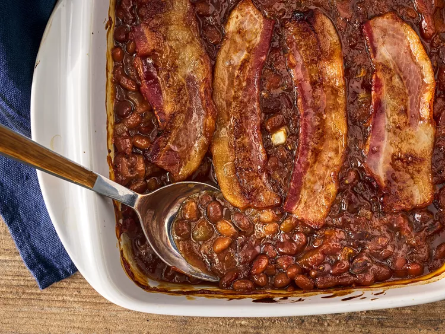

German Pancakes

Description
This German pancake recipe is light, fluffy, and easy to make with ingredients you likely already have on hand.
What Is a German Pancake?
A German pancake (a.k.a. a Dutch baby) is similar to a large Yorkshire pudding. Unlike other types of pancakes, German pancakes are baked in the oven instead of fried on the stove.
They also don’t contain leaving ingredients, such as baking powder or baking soda.
Ingredients
- ¼ cup butter
- 1 cup all-purpose flour
- 1 cup milk
- 6 large eggs, lightly beaten
- ⅛ teaspoon salt
Steps
- Preheat the oven to 350 degrees F (175 degrees C). Melt butter in a medium baking dish.
- Mix flour, milk, eggs, and salt in a medium bowl. Pour the mixture into the prepared baking dish.
- Bake on center rack in the preheated oven for 30 to 40 minutes, until golden brown.